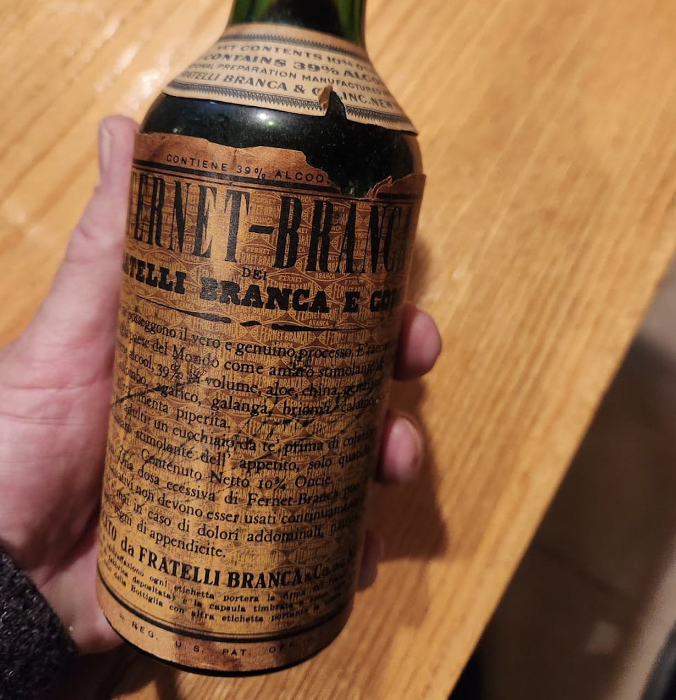

Fernet

Where It Takes Place
The Fernet Branca incident takes place at London Airport (Heathrow) on an August morning, before Gavin Young's flight to Athens. This is confirmed by the text: "At last I was ready for the traveller's roulette to begin, and drove to London airport to catch the Athens flight."
Gavin's Mood
Gavin's mood was one of apprehension and solemn determination. He felt "none of the elation you might expect in an adventurer departing for Eastern seas" and had spent "a late last night - reluctant, when it came to it, to abandon friends for a seagoing mystery tour almost half across the world on unscheduled ships." He notes: "In thirty years of travel I have seldom begun a long journey without the feeling that I shall never return, and this beginning was no exception."
Why It Matters
- It marks the true beginning of Gavin's journey to China - the point of no return where he leaves Europe behind
- The Fernet Branca serves as a ritualistic fortification before facing the uncertainties of his journey
- The barman's "Brave man" comment provides external validation of Gavin's courage for undertaking this unconventional trip
- It establishes a pattern of seeking small comforts and omens before embarking on difficult legs of the journey
- The incident contrasts sharply with the disappointing airline meal that follows, highlighting the unpredictability of travel comforts
What It Means
The Fernet Branca represents:
- A deliberate choice to fortify himself with something strong and bitter before facing the unknown
- A traveler's ritual - seeking courage through a distinctive drink
- The barman's reaction ("Brave man") acknowledges the unconventional nature of Gavin's journey approach
- It symbolizes the bittersweet nature of adventure - the warmth spreading through him contrasts with the cold, formal airport environment
- The "small puddle" around the glass suggests abundance and generosity as a positive omen
What It Leads To
The Fernet Branca leads directly to:
- Immediate effect: "The Fernet Branca's bitter warmth raised my spirits a notch or two"
- Psychological boost: Combined with the false promise of an on-time departure announcement, it helps him cope with the airport stress
- Narrative progression: Despite the Fernet Branca's help, he still faces significant delays (two hours to board, another hour before meal service)
- Contrast: The fortified spirits from the Fernet Branca make the disappointing airline meal ("paprika sauce" congealing on "turkey escalopes" with "the consistency of corrugated cardboard") even more disappointing by comparison
- Journey theme: It establishes his pattern of seeking small comforts and rituals to cope with the uncertainties of slow boat travel to China
Aftermath
The incident is followed by his eventual boarding, the disappointing airline meal, buying a cognac to wash away the taste, and then finally seeing the Alps and Salamis Bay as he truly begins his journey toward Asia.